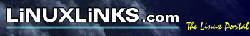
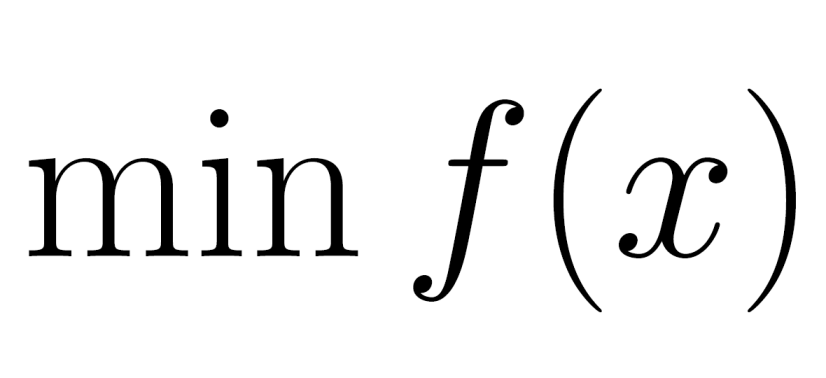

relax infrastructure
| Site | Description | Links |
| Gna! was a central point for the development, distribution and maintenance of Libre Software (Free Software) projects. | Prior to the Gna! shutdown, the relax project page used to be at https://gna.org/projects/relax. The relax developer Gna! pages were (in alphabetical order): Edward d'Auvergne, Michael Bieri, Troels Linnet, Chris MacRaild, Sébastien Morin, Andrew Perry, Han Sun, Gary Thompson. | |
| SourceForge is an Open Source community resource dedicated to helping open source projects be as successful as possible. | This is a backup infrastructure site. The relax project page is https://sourceforge.net/projects/nmr-relax. | |
| Open source software to collaborate on code. | This is a backup infrastructure site. The relax project page is https://gitlab.com/nmr-relax. | |
| GitHub is how people build software. | This is a backup infrastructure site. The relax project page is https://github.com/nmr-relax. |
Mailing list archives
| Site | Description | Links |
| An easy-to-use archiving service for electronic mailing lists. | The archived relax mailing lists include relax-announce, relax-users, relax-devel, and relax-commits. | |
| MARC | Mailing list ARChives. | The archived relax mailing lists include relax-announce, relax-users, relax-devel, and relax-commits. |
Web resources
| Site | Description | Links |
 |
The Free Software Directory. | The relax project page is http://directory.fsf.org/wiki/Relax. |
| The DMOZ Open Directory Project. | On the Top : Science : Chemistry : Nuclear Magnetic Resonance : Software page. | |
|  | LinuxLinks.com, the Linux portal, is a website listing many Linux software projects. | On the Software:Scientific:Biology:Proteins page. |
| Softpedia is the encyclopedia of free software downloads. | Softpedia has pages for GNU/Linux, MS Windows, and Mac OS X. | |
| Pro-Linux ist eine der größten deutschsprachigen Seiten zum Thema Linux. | The relax page is http://www.pro-linux.de/cgi-bin/DBApp/check.cgi?ShowApp..10010.100. | |
| Use the Open Source Software Directory to find the best free and open-source software for home and business. | On the chemistry and biology page http://www.opensourcesoftwaredirectory.com/Scientific/Chemo-and-bio. | |
| archive.today | The archive.today personal Wayback Machine. | The relax pages are archived at http://archive.today/www.nmr-relax.com. |
| OpenHUB, previously known as Ohloh, is a free public directory of Free and Open Source Software and the contributors who create and maintain it. | The relax project page is https://www.openhub.net/p/nmr-relax. The relax developers pages are: |
Protein dynamics
| Site | Description |
| NESSY is an open source software to analyse NMR relaxation dispersion data of either CPMG or R1p (R1rho) dispersion experiments. | |
| The Bruker Dynamics Center for the processing of R1, R2, R1ρ, and steady-state NOE data from Bruker NMR spectrometers, as well as other more advanced analyses. |
relax libraries
| Site | Description |
|  | The minfx project is a Python package for numerical optimisation, being a large collection of standard minimisation algorithms. This is used by relax for the optimisation user functions. |
| Bmrblib is an API abstracting the BioMagResBank (BMRB) NMR-STAR format. It allows the writing of NMR-STAR files for BMRB data deposition and the reading and easy extraction of data from files residing in the BMRB data bank, all without knowledge of the Self-Defining Text Archive and Retrieval (STAR) format. This is used by relax to interface with the BMRB. |